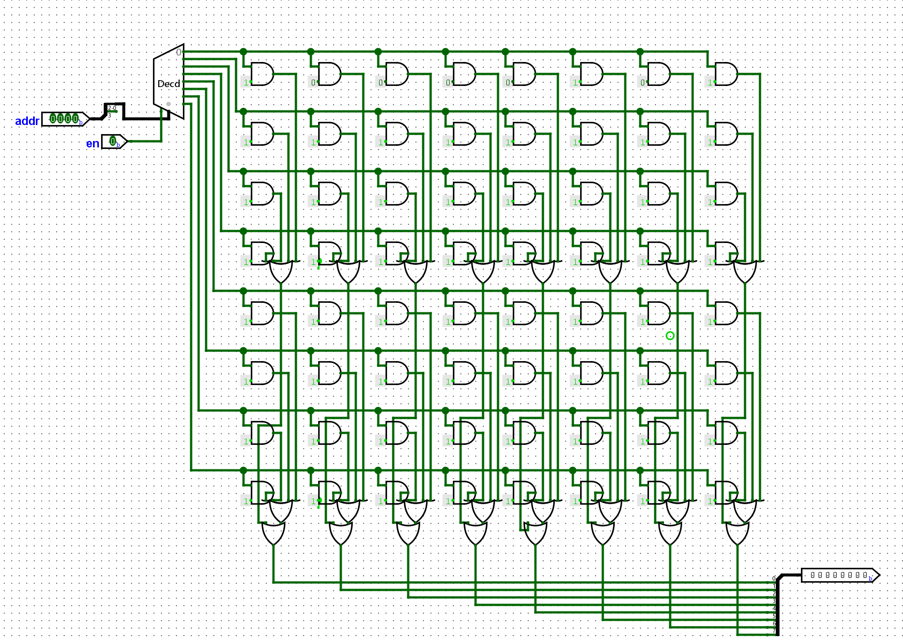
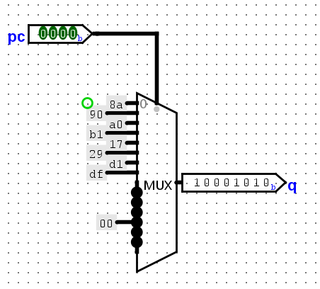
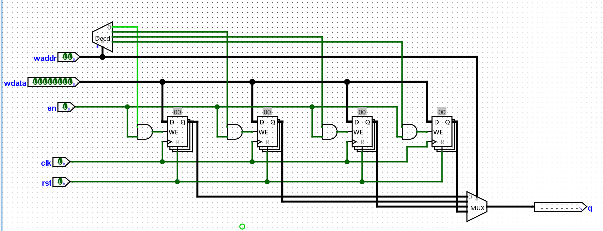
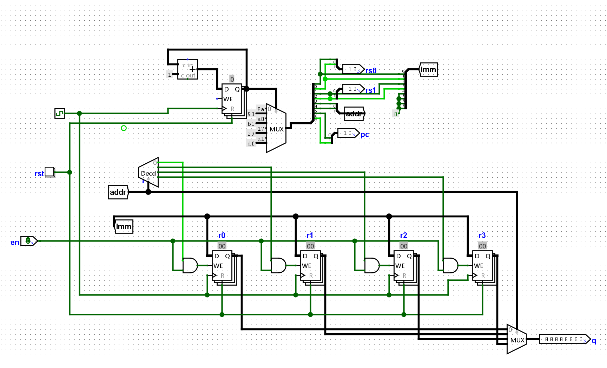
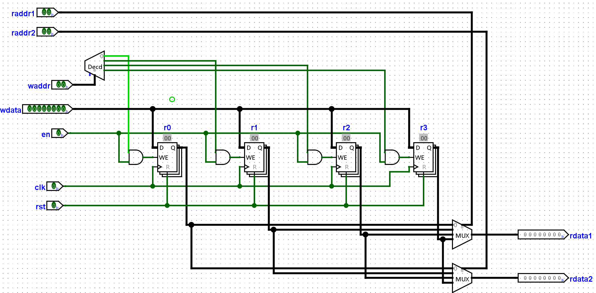
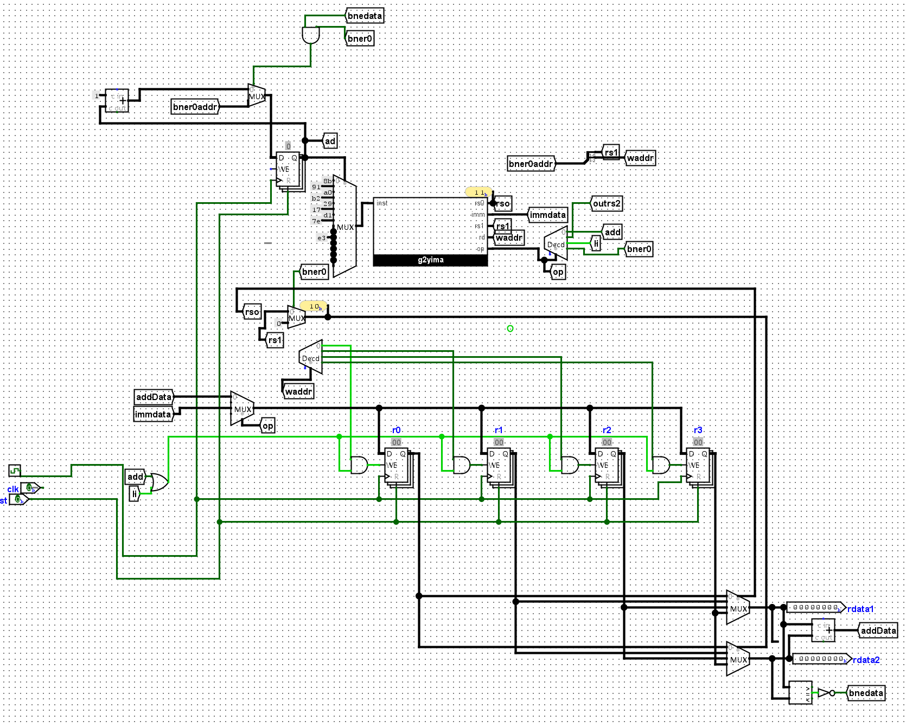
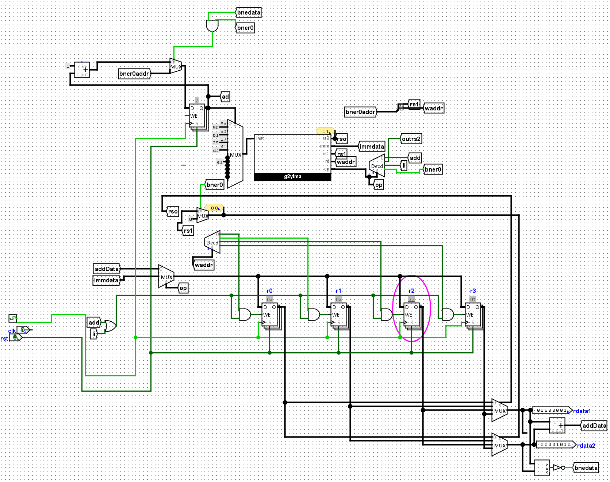
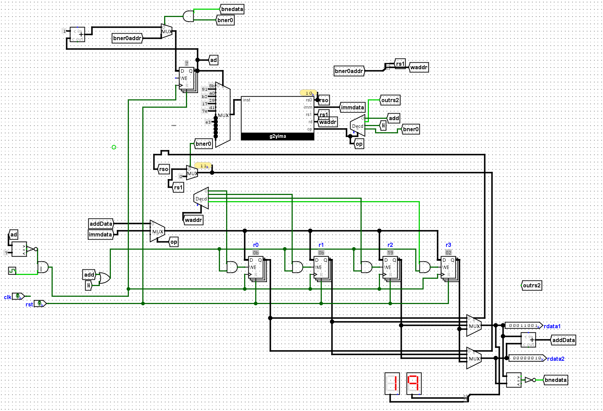

F5 支持数列求和的简单处理器
已经学习过了数字逻辑电路的知识，现在实现一个小的cpu.
我们先明确一下要实现指令集sISA的细节，多了寄存器的位宽。
- PC 位宽为 4 位，初值为
0 - GPR 有 4 个，位宽均为 8 位
- 支持如下 3 条指令
7 6 5 4 3 2 1 0
+----+----+-----+-----+
| 00 | rd | rs1 | rs2 | R[rd]=R[rs1]+R[rs2] add指令, 寄存器相加
+----+----+-----+-----+
| 10 | rd | imm | R[rd]=imm li指令, 装入立即数, 高位补０
+----+----+-----+-----+
| 11 | addr | rs2 | if (R[0]!=R[rs2]) PC=addr bner0指令, 若不等于R[0]则跳转
+----+----------+-----+指令说明
| 指令 | 操作码 | 格式 | 功能 |
|---|---|---|---|
add rd, rs1, rs2 |
00 |
00 + rd[5:4] + rs1[3:2] + rs2[1:0] |
rd = rs1 + rs2 |
li rd, imm |
10 |
10 + rd[5:4] + imm[3:0] |
rd = zero_ext(imm) |
bner0 rs, addr |
11 |
11 + addr[5:2] + rs[1:0] |
if R[0] != R[rs]: PC = addr |
注意 bner0 的 addr 在高位 bits[5:2]，rs 在低位 bits[1:0]，与 add/li 的 rd/rs 位置不同。
5.1.1 实现取指
通过多路选择器实现一个ROM，并在其中存放数列求和的指令序列，然后通过PC寄存器取出指令。你需要根据你的理解来确定ROM的规格。
要实现的是 1+2+...+10, 首先列出指令，翻译成机器码
0: li r0, 10
1: li r1, 0
2: li r2, 0
3: li r3, 1
4: add r1, r1, r3
5: add r2, r2, r1
6: bner0 r1, 4
7: bner0 r3, 7
10001010
10010000
10100000
10110001
00010111
00101001
11010001
11011111有 这个rom的实现，我个人是用多路选择器，比较方便更改指令，而且搭建也比较简单。
下面是正常搭的
下面是选择器搭的：
5.1.2 实现GPR机器写入功能
在寄存器的基础上搭建一个RAM，从而实现GPR的写入功能。你需要根据你的理解来确定RAM的规格。
GPR有四个，每个是8位：

5.1.3 实现仅支持li指令的sCPU
根据上文，用数字电路实现li的指令周期涉及的各个部件，并将它们连接起来。实现后，尝试让sCPU执行数列求和程序中的前几条li指令，并观察电路中GPR的状态是否与ISA的状态一致。
读取rom里的值，按照li指令向寄存器写入

5.2.1 添加add指令
根据上文，在sCPU中添加add指令。实现后，尝试让sCPU继续执行数列求和程序中的几条add指令，并观察电路中GPR的状态是否与ISA的状态一致。
观察add指令，引出4-5，6-7作为新的地址；同时要为GPR增加两个接口，之前的接口修改一下名称复用。
- 第1个读端口:
raddr1(读地址),rdata1(读数据) - 第2个读端口:
raddr2,rdata2 - 写端口:
waddr(写地址),wdata(写数据),wen(写使能),clk(时钟)
如图，这样就可以满足add指令，同时读取两个源操作数、写入一个寄存器的操作了。
接着，我们要实现一个译码功能：判断命令是add还是li，不同信号输入输出不一样：
li:
- 需要waddr和 imm作为输入，写使能信号开启（en或者wen）
addr：
- 需要
raddr1和raddr2作为输入，读取该地址的数据 - 需要
rdata1和rdata2作为输出，相加后给wdata - 根据
en和waddr以及时钟信号更新GPR
- 需要

这是实现指令的例子；依旧用多路选择器判断wdata，译码器判断高二位op判断命令
5.2.2 添加bner0 指令
根据上文, 在sCPU中添加
bner0指令. 实现后, 尝试让sCPU执行完整的数列求和程序, 如果你的实现正确, 你应该能看到PC最终为7, 且在某GPR中存放求和结果55.
回顾bner0指令：
7 6 5 2 1 0
+----+---- -----+-----+
| 11 | addr | rs2 | if (R[0]!=R[rs2]) PC=addr bner0指令, 若不等于R[0]则跳转
+----+----------+-----+这个需要R[rs2]处的值和R[0]比较，可以用比较器；然后涉及到一个是否赋值的问题，还是可以用多路选择器控制写使能 所以，所需信号：
addr的输出，改变pc的值；增加一个修改pc值的部分（依旧选择器）- 对比
R[0]和R[rs2]，这个程序里是0和2处的对比。
求和程序的最终结果是0x37,r2=55=0x37

结果如图。5.3.1 计算10以内的奇数和。
编写一段指令序列，计算10以内的奇数之和，即1+3+5+7+9。然后尝试用你设计的sCPU执行这段指令序列，检查运行结果是否符合预期。
列出指令：
10001011 # 0: li r0, 11 → 终止值（奇数到11结束）
10010001 # 1: li r1, 1 → 当前奇数，从1开始
10100000 # 2: li r2, 0 → 累加和
10110010 # 3: li r3, 2 → 步长
00101001 # 4: add r2, r2, r1 → sum += odd
00010111 # 5: add r1, r1, r3 → odd += 2
11010001 # 6: bner0 r1, 4 → if odd != 11 → 继续循环
11011111 # 7: bner0 r3, 7 → 自旋停机只需要修改rom里的值就行，也就是修改rom作用的那个选择器的输出值。
5.3.2 添加新指令
尝试为sISA添加一条新指令out rs, 执行该指令后, 会将R[rs]以十六进制的形式输出到七段数码管. 你可以自行决定这条指令的编码.
然后, 在sCPU中实现out指令, 并修改数列求和程序, 使得在计算出结果后, 能在七段数码管中显示计算结果.
7 6 5 4 3 2 1 0
+----+----+-----+-----+
| 00 | rd | rs1 | rs2 | R[rd]=R[rs1]+R[rs2] add指令, 寄存器相加
+----+----+-----+-----+
| 10 | rd | imm | R[rd]=imm li指令, 装入立即数, 高位补０
+----+----+-----+-----+
| 11 | addr | rs2 | if (R[0]!=R[rs2]) PC=addr bner0指令, 若不等于R[0]则跳转
+----+----------+-----+
| 01 | none | rs2 | R[rs2] -> 七段数码管 out指令，将R[rs2]的值输出到数码管。
+----+----------+-----+读取rs2作为输出；为了稳定输出，我用了一个pc和7的比较器来和时钟信号与，让系统停在pc=7，也就是显示数码管的位置。
